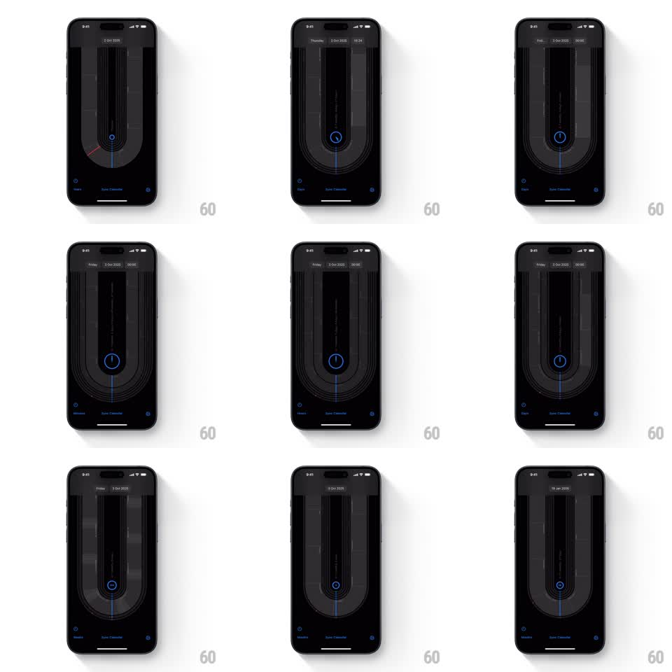

Media
Frame-by-frame

Rebuild this interaction 1:1: uCal's scale switch - scrubbing spins the concentric time track while the central indicator morphs shape and the whole dial rescales between days, weeks, months, and years.

Rebuild this interaction 1:1: uCal's scale switch - scrubbing spins the concentric time track while the central indicator morphs shape and the whole dial rescales between days, weeks, months, and years.
## Integration
Integration: stack-agnostic spec - springs given as stiffness/damping, timed motions as duration + curve; map every value to your framework and animation library of choice.
## Scene
Black screen with the concentric U-track dial: nested thin rings forming a vertical stadium shape around a dark core. The central indicator is a small blue circle (clock glyph when at day scale, a plain dot at coarser scales). Header shows the focused date ("2 Oct 2025", "Friday, 3 Oct 2025", "6 Jan 2026"...); bottom row names the scale (Days, Weeks, Months) around "Sync Calendar".
## Motion spec
Pattern: dial rotation with indicator morph and scale rescale.
- Horizontal or curved drags rotate the dial: ring markings sweep through the bottom read point with 1:1 angular tracking and momentum on release (friction ~0.92/frame), easing to rest.
- The indicator morphs with scale: a full clock circle at Days/Hours (ring + hand) that collapses to a plain dot at Months/Years (scale + stroke fade, 250ms, spring ~320/20).
- Switching scales rescales the dial's line density: rings compress or expand radially (300ms ease-in-out) as tick labels fade and re-render (200ms).
- The header date updates continuously during scrub, and its precision follows the scale (weekday + time at day scale, date only at month scale).
## Calibration
- Ring rotation is perfectly concentric - all rings share one center; no wobble.
- The indicator sits dead-center at the dial's bottom and never travels; time flows through it.
## Reduced motion
Rotation moves in discrete steps; indicator swaps shape without morph.
## Don't miss
- The dial's rings are hairlines on black - the entire UI is line weight, glow, and motion.
- Scale label and header always agree; there is no transient state where they disagree.